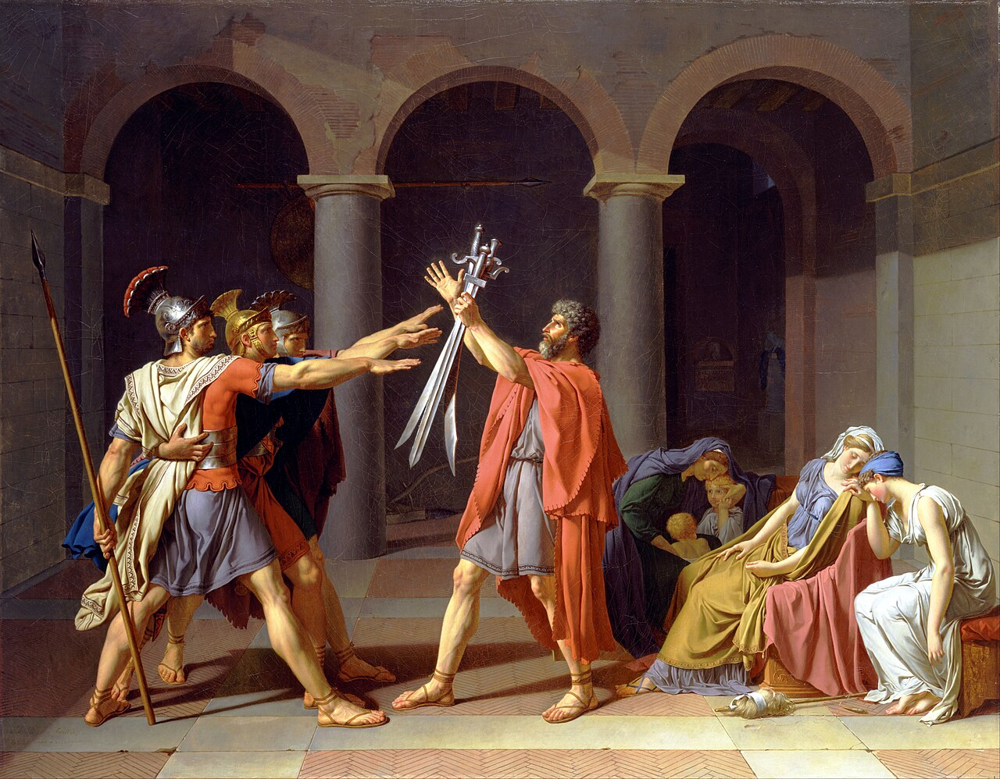
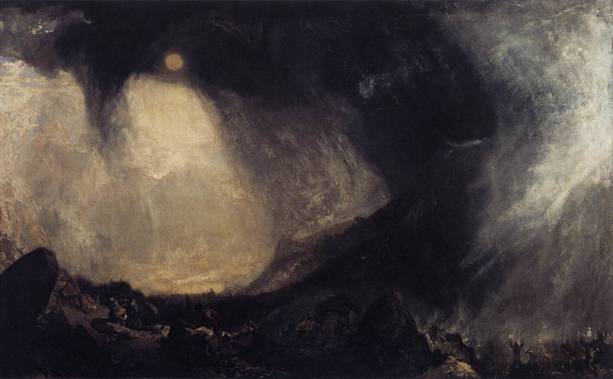
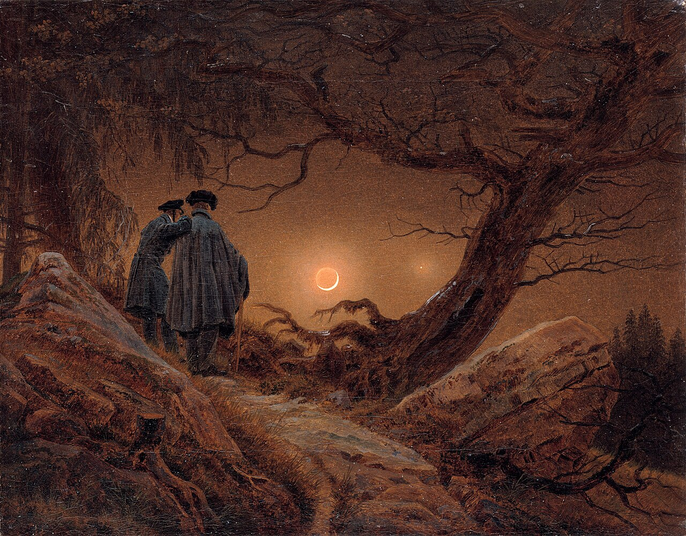
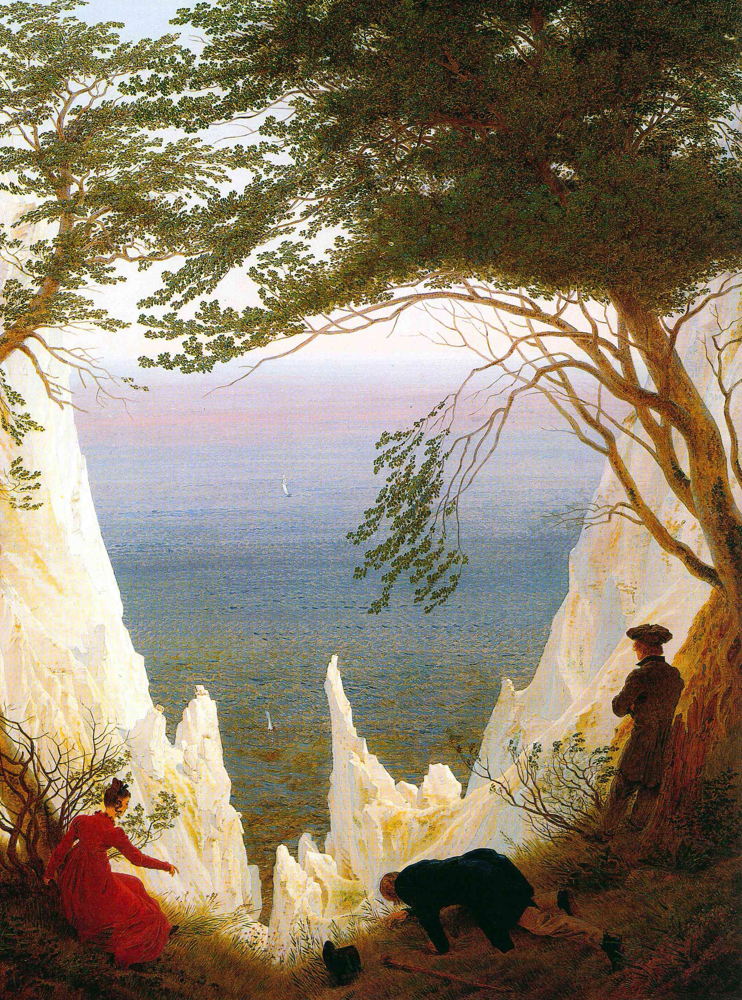

ROMANTICISM

A crowded history, or one solitary self
Many figures, a grand shared myth

Oath of the Horatii · Jacques-Louis DavidOne person, alone before natureWanderer above the Sea of Fog · Caspar David Friedrich
Wanderer above the Sea of Fog · Caspar David FriedrichThe Sublime holds both at once
Terror — nature as violence

Snow Storm: Hannibal and his Army Crossing the Alps · J. M. W. TurnerAwe — nature as wonderWanderer above the Sea of Fog · Caspar David Friedrich
Wanderer above the Sea of Fog · Caspar David FriedrichStand behind him, and his eyes become yours
Alone, in the fogWanderer above the Sea of Fog · Caspar David Friedrich
Wanderer above the Sea of Fog · Caspar David FriedrichTogether, under moonlight

Two Men Contemplating the Moon · Caspar David FriedrichFramed by trees, at the cliff's edge

Chalk Cliffs on Rügen · Caspar David FriedrichDrag the landscape ↔